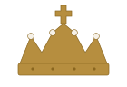
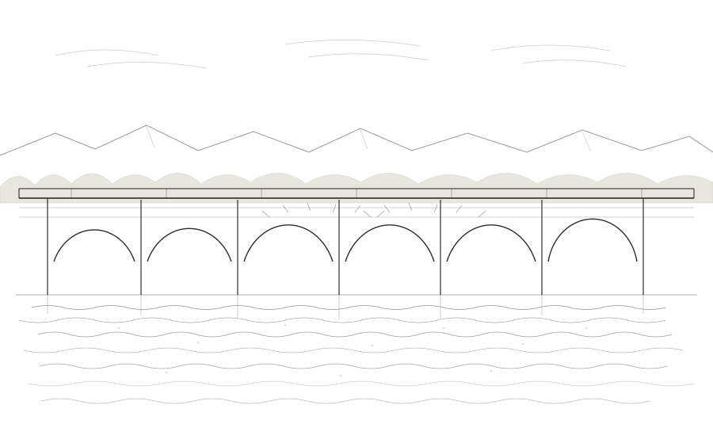
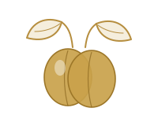

Our Orchard
Grown in the high valleys of Ličko Petrovo Selo, where the Sorak family has tended plums for generations.
Learn More
1792
PLUM BRANDY
Crafted in Ličko Petrovo Selo, Croatia
The Sorak Family Estate


TRADITION · NATURE · HERITAGE
Grown in the high valleys of Ličko Petrovo Selo, where the Sorak family has tended plums for generations.
Learn MoreSmall-batch distilled plum brandy, made slowly and from one place only. Nothing added, nothing hurried.
DiscoverExperience the authentic taste of Lika, delivered to your door — or visit the estate cellar door.
Shop NowThe Sorak Family
In 1792 the first families crossed the Korana and settled Ličko Petrovo Selo. They built a stone bridge and planted plums. The Sorak family still works that orchard — picking by hand each autumn, distilling in small batches, exactly as the highlands taught us.
MOST 1792 is the result — named for the bridge they built, and the year they built it. Tradition, nature and heritage in every drop.